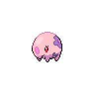
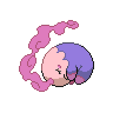
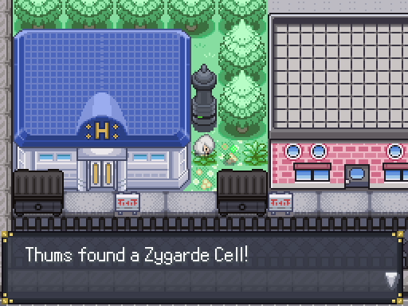
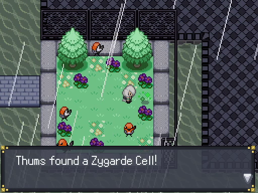
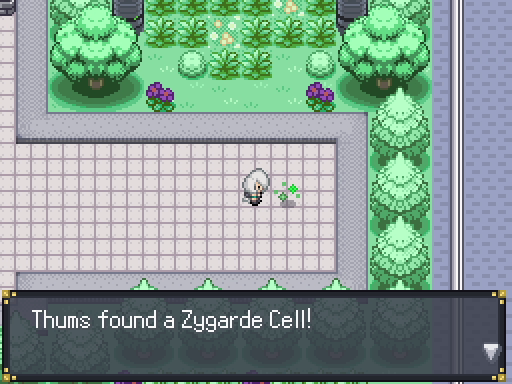
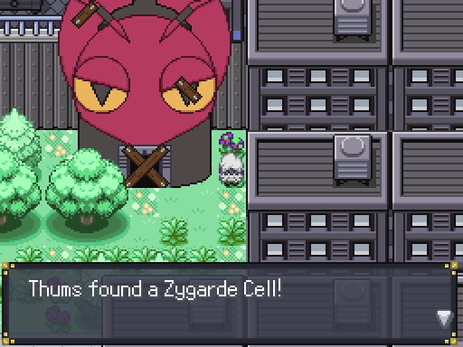
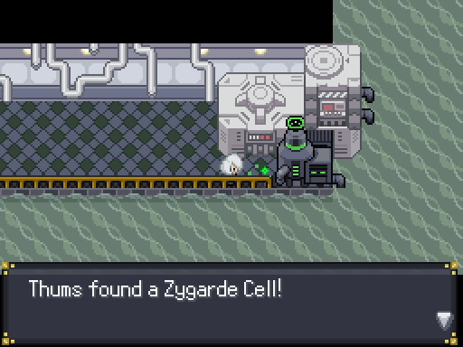
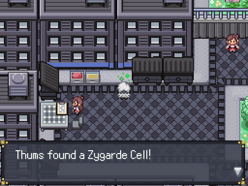
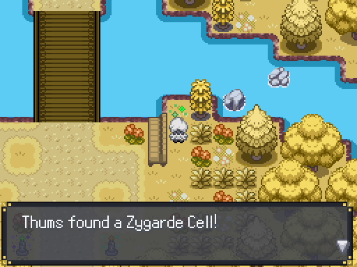
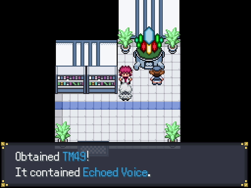

East Gearen City - After One Badge

Karrina's Quest

As you leave the gym, you'll run into Karrina, who has the TM for Rock Smash. In order for her to give it to you though, she wants you to help her with a task. She'll tell you to come with her to Junction Bridge, so go ahead and follow her over. Junction Bridge is through the path left of the Route 1 Station on the left side of East Gearen City. Karrina will be in front of a building, and after talking to her she'll head in. Prepare your Pokemon, and head into the lab.
Inside the lab, you'll meet Dr. Jenkel who is experimenting on a Musharna. Karrina will tell you to defeat him, and you'll be thrown into a battle.

Mad Scientist Dr. Jenkel
This fight is relatively straight forward. The Munnas aren't too threatening, but the Musharna can PULSE up, gaining a Fairy-type and turning into a very tanky Pokemon. The PULSE Musharna has the ability Misty Surge which turns the field into Misty Terrain. Upon summoning the Misty Terrain, the Munna can heal back up to full health from its held Elemental Seed, so be careful. As long as you can turn this battle into a 2v1 you should have the advantage here.
|

Munna, Level 18 - Elemental Seed |
Psychic | Hypnosis |
|---|---|---|
| Psybeam | ||
| Moonlight | ||
| Light Screen | ||
|
Munna, Level 18 - Elemental Seed |
Psychic | Hypnosis |
| Psybeam | ||
| Moonlight | ||
| Light Screen | ||
|

Musharna, Level 20 - PULSE Plus |
Psychic | Mist Ball |
| Fairy Wind | ||
| Misty Terrain | ||
| Wish |
Watch the scene play out once the battle is over. Karrina will give you TM94 - Rock Smash.
 With your newly aquired Rock Smash, you can quickly detour down below the lab and right, and you'll find a Blitzle
With your newly aquired Rock Smash, you can quickly detour down below the lab and right, and you'll find a Blitzle that you can battle and catch if you give it a Gourmet Treat.
that you can battle and catch if you give it a Gourmet Treat.
Magnolia Library and Help Plaza

Our next destination is Magnolia Library, up near the top of the left side of East Gearen City. Now that you have one badge, the lady by the stairs will move aside, allowing you access to the top floor. Here, you can find a Move Tutor
 for the moves Dual Chop, Block, and Super Fang at the price of some shards. Talking to the person all the way on the right will give you a long-term sidequest. She'll introduce herself as Zumi, a researcher, and she wants you to obtain Pokedex data on certain Pokemon. Our first target is Dedenne, which we'll have access to in the next section.
for the moves Dual Chop, Block, and Super Fang at the price of some shards. Talking to the person all the way on the right will give you a long-term sidequest. She'll introduce herself as Zumi, a researcher, and she wants you to obtain Pokedex data on certain Pokemon. Our first target is Dedenne, which we'll have access to in the next section.
On the first floor, if you pay
 300 to get in, inside the left room there will be a girl
300 to get in, inside the left room there will be a girl who will give you a quiz with a Thunderstone as a reward. You can do the quiz as often as you want, so you can easily trial and error, but if you want to know the answers they are: Brown, Goldenwood Forest, Goldenleaf Area. That's all there is to do here in the library, so head on over next door to the Help Plaza.
who will give you a quiz with a Thunderstone as a reward. You can do the quiz as often as you want, so you can easily trial and error, but if you want to know the answers they are: Brown, Goldenwood Forest, Goldenleaf Area. That's all there is to do here in the library, so head on over next door to the Help Plaza.

You'll be introduced to Ayuda, the president of Help Plaza Co. He'll ask you to help with something, and doesn't give you a choice as you are taken into the side room. Here, Ayuda will let you know that he is trying to reconstruct the Legendary Pokemon Zygarde, but to do that he will need Zygarde Cells. He'll give you a Gather Cube, and periodically you'll be able to get rewards from collecting these cells. Our first reward is at 5 cells, which we can collect right now.
There are 7 Zygarde Cells that we can currently collect. The first is right outside the Help Plaza. You can find the second in Oceana Pier, and the third on the rooftop of Chrisola Hotel during the day. The fourth can be found in Venam's hidden area. If you are unsure of how to get there, refer to the walkthrough of the Gym. The fifth can be found in the sewers when entering from the Violet Building entrance, and the sixth is up the stairs from there, only accessible at night. The final one for now is on Route 1, so you'll have to pay for a ticket to get there.
Once you have at least 5, you can go back to Ayuda to claim your reward, a TM49 - Echoed Voice.
Final Preparations

There's only a few things left to do. First, you can visit Venam's house to be introduced to Venam's mother, Chasity. She'll also give you a TM102 - Poison Sweep.
 This is a custom Poison-type move in this game with a Base Power of 50 and a chance to lower the target's Speed by one stage. It's a useful move at this point in the game, and a lot of non Poison-type Pokemon can learn it too, so it's worth checking out. Upstairs, you can also pick up a Poison Barb.
This is a custom Poison-type move in this game with a Base Power of 50 and a chance to lower the target's Speed by one stage. It's a useful move at this point in the game, and a lot of non Poison-type Pokemon can learn it too, so it's worth checking out. Upstairs, you can also pick up a Poison Barb. While you're in the area, you can check out the Pokeball Emporium, as they now stock up Fast Balls and Love Balls. Love Balls are good for their price if you're willing to switch Pokemon around so that the requirements are met.
While you're in the area, you can check out the Pokeball Emporium, as they now stock up Fast Balls and Love Balls. Love Balls are good for their price if you're willing to switch Pokemon around so that the requirements are met.
Our final destination is back to Gearen Lab. Now that we have one badge, we can talk to this girl,
 who will explain that her and a team of people are making a Pokemon Fangame. Here, you will be playing through the Johto league using a pre-made team. She'll start of by letting you choose your starter, and you'll be given a second Pokemon along the way. If you chose Cyndaquil, you will have an Onix. If you chose Totodile, you'll get a Phanpy. If you chose Chikorita, Mareep will be added to your party. Once you have your starter, you'll be put in a battle against Gym Leader Falkner. Battles during this sidequest are fought in the Glitch Field, which turns the battle mechanics to the original Red/Blue mechanics. Regardless, your secondary Pokemon should have plenty of options against Falkner's Pokemon here, so have fun.
who will explain that her and a team of people are making a Pokemon Fangame. Here, you will be playing through the Johto league using a pre-made team. She'll start of by letting you choose your starter, and you'll be given a second Pokemon along the way. If you chose Cyndaquil, you will have an Onix. If you chose Totodile, you'll get a Phanpy. If you chose Chikorita, Mareep will be added to your party. Once you have your starter, you'll be put in a battle against Gym Leader Falkner. Battles during this sidequest are fought in the Glitch Field, which turns the battle mechanics to the original Red/Blue mechanics. Regardless, your secondary Pokemon should have plenty of options against Falkner's Pokemon here, so have fun.
Once you've finished with that, we've done all we can in East Gearen City for now. Prepare your Pokeballs and Potions, then head on to the Route 2 via the station by Venam's house.

<< East Gearen City Gym Route 2 >>
×

East Gearen City (Left)
×

East Gearen City (Right)
×

Gearen Park